Requirements & Process Analysis
Turning business needs into clear requirements, process maps and user stories.
MIS Undergraduate · NSBM Green University
Aspiring Project Manager & Business Analyst — bridging technology and business to turn requirements into solutions that work.
I'm a third-year Management Information Systems undergraduate at NSBM Green University, preparing for a career in Project Management and Business Analysis. With a finance foundation from CA and AAT and a strong grounding in information systems, I focus on turning business needs into clear requirements, structured plans and practical solutions.
I value clear communication, accountability and well-documented work, and I'm seeking an internship where I can support real projects, learn from experienced professionals and add value from the start.
BSc in Management Information Systems (Special)
NSBM Green University
Sri Lanka
Internship — Project Management / Business Analysis
amandirajapaksha2003@gmail.com
Sinhala (Native) · English (Intermediate)
Clarify goals, users and constraints.
Map requirements, stakeholders and processes.
Define scope, milestones and budgets.
Communicate progress, document decisions and follow through.
Turning business needs into clear requirements, process maps and user stories.
Structuring scope, milestones, schedules and stakeholder communication.
Applying finance fundamentals to budgets, reporting and cost awareness.
Producing clear, traceable documentation and progress updates.
Students' Wellbeing Association of NSBM · "Harithawarjana" event
Served as Vice President of the Finance Team on the organizing committee of the "Harithawarjana" event. Led fundraising efforts, planned and managed the event budget, and prepared budget reports to keep the committee informed on spending.
IEEE Student Branch · NSBM Green University
Appointed as a Standards Committee Member in the Finance Team of the IEEE Student Branch at NSBM Green University. Contributing to financial planning, budgeting and standards compliance for university-level IEEE events and activities.
Students' Wellbeing Association of NSBM
Received a Certificate of Appreciation for contributions as an Organizing Committee Member at the "Linkup – August Meetup". Worked with a team to plan and deliver a successful student event, developing leadership, teamwork and event management skills.
Bank of Ceylon · Piliyandala
Supported daily banking operations, assisted customers with banking-related inquiries and handled documentation processes. Gained hands-on experience in financial service practices, teamwork and professional communication.
GitHub — github.com/Amandi1020
Consistently building and publishing projects on GitHub. Contributed to group projects including the Task Management System (Spring Boot + React) and Salon Nilu (PHP + MySQL). Earned the GitHub Pull Shark achievement through active contributions.
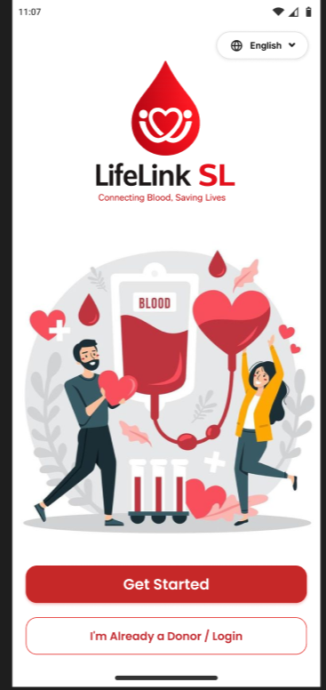
A user-centered mobile app connecting blood donors, hospitals and the community, with emergency requests, first-time donor guidance, an eligibility checker, multilingual support, low data mode, SMS notifications and accessibility-focused design.
A user-centered mobile application designed to connect blood donors, hospitals, and the community. Features include emergency blood requests, community engagement, first-time donor guidance, an eligibility checker, multilingual support (Sinhala, Tamil, English), low data mode, SMS notifications, and accessibility-focused design. Built following HCI principles with a focus on inclusivity, usability, and visual consistency.
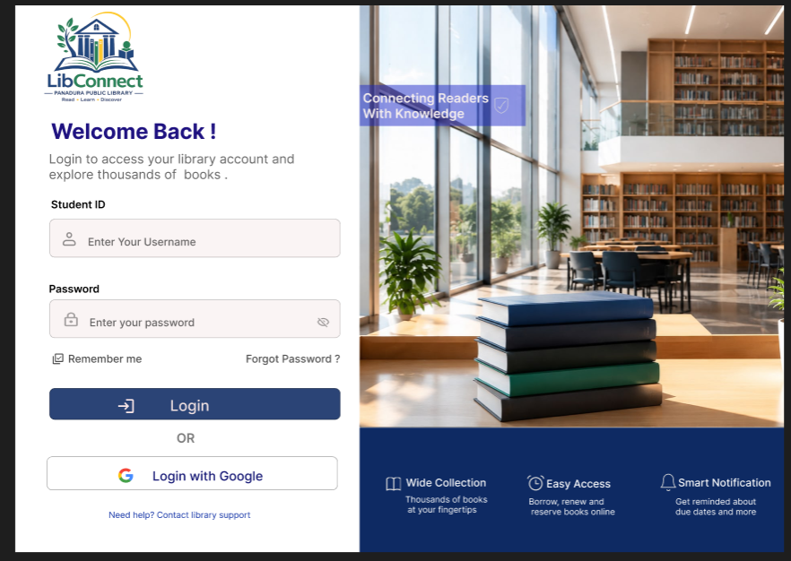
Applied the BPM lifecycle (identification, discovery, modelling, analysis, redesign) to a library borrowing and renewal process. Produced AS-IS and TO-BE BPMN models and a Figma prototype of the improved process, including a QR scan option.

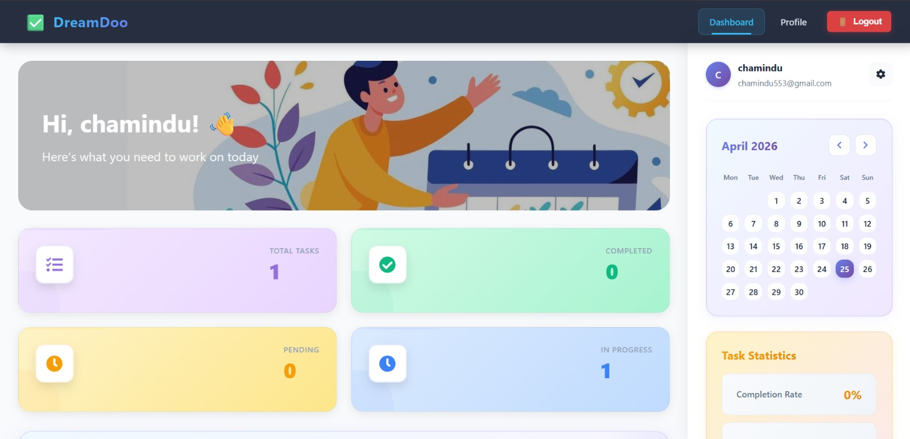
Enterprise full-stack task manager with JWT auth, email notifications, PDF/CSV export and admin dashboard with charts.

A full-stack web system for pet adoption and care information management with frontend, backend and database layers.
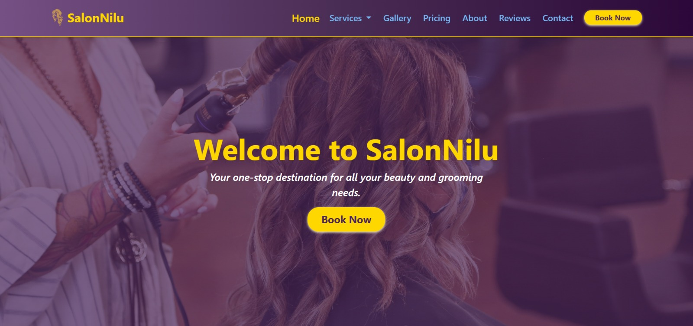
Full-featured salon website with online booking, service catalog, gallery, customer reviews and complete admin dashboard.

A clean login and signup interface built with React, customized with personal styling and component design.
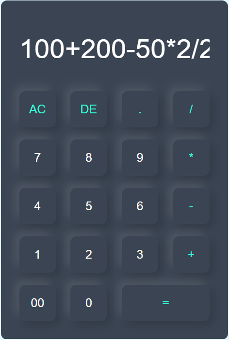
A web-based calculator with a clean modern UI supporting basic arithmetic operations, AC/delete and real-time display.
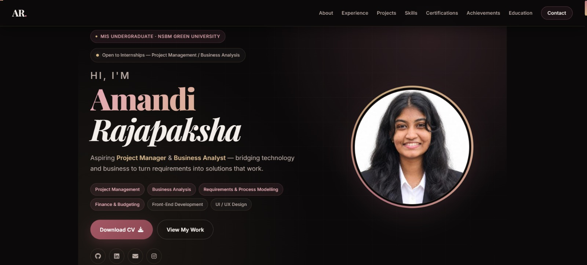
Placeholder for an upcoming business analysis project. Details will be added when the project is ready.
Placeholder for a future project. Details will be added when the project is ready.
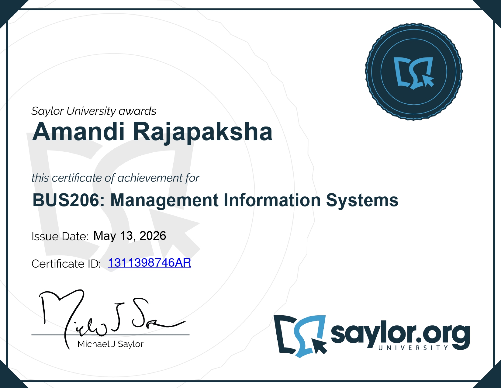
Saylor Academy
2026
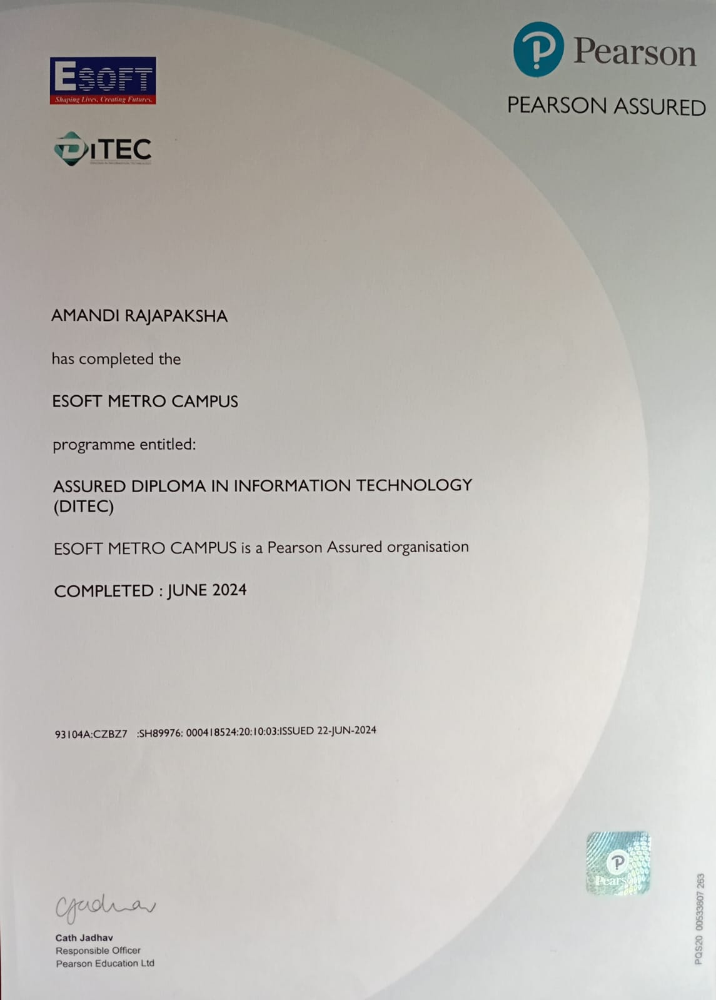
Pearson / ESOFT Metro Campus
2026
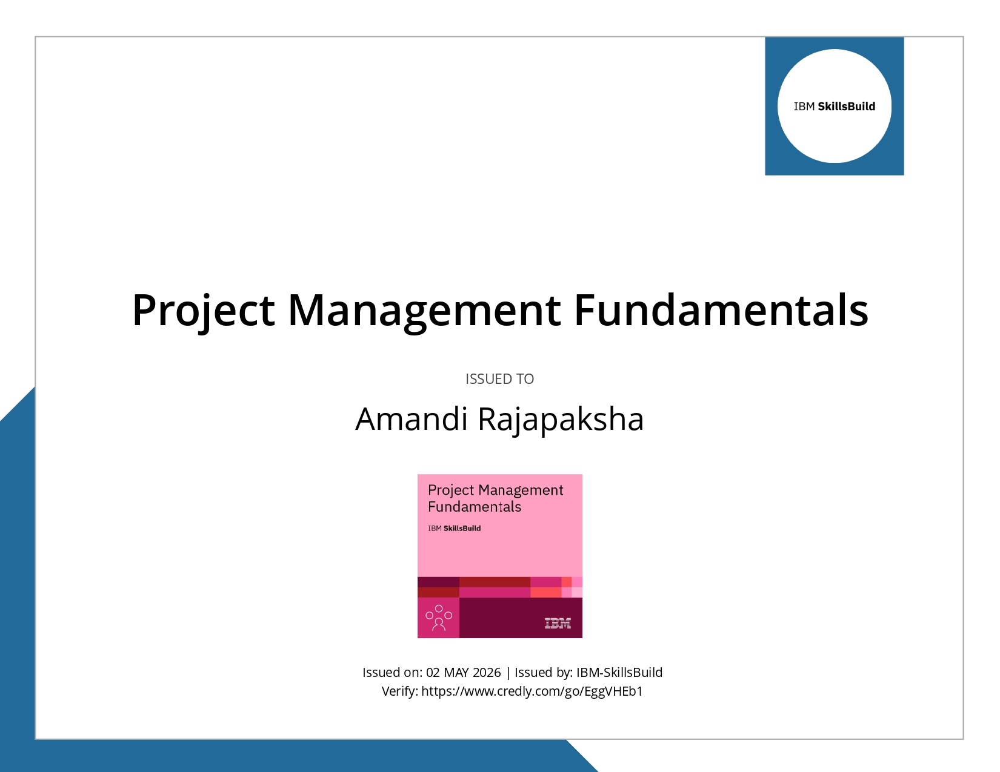
IBM SkillsBuild
2026
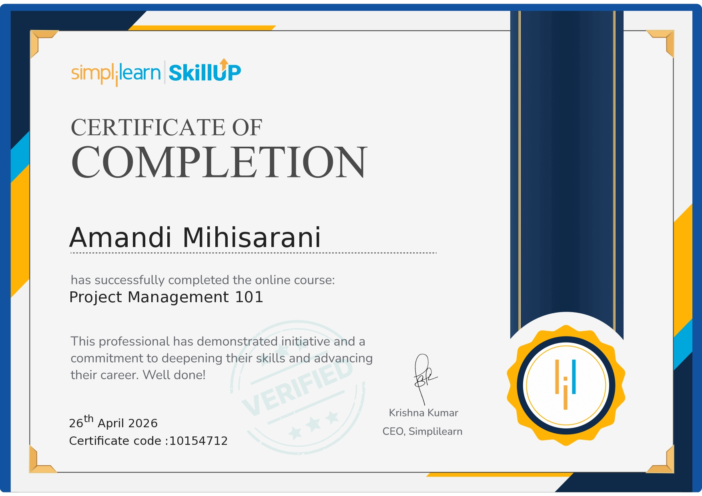
Simplilearn
2026
Simplilearn
2026
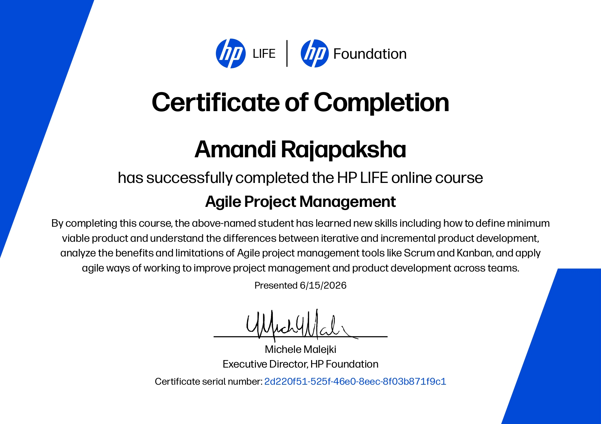
HP LIFE
2026
Committee roles, events and activities beyond the classroom.
Organizer TBA
Year TBA

Finance Department, Students' Wellbeing Association of NSBM
2025
Organizer TBA
Year TBA
Organizer TBA
Year TBA
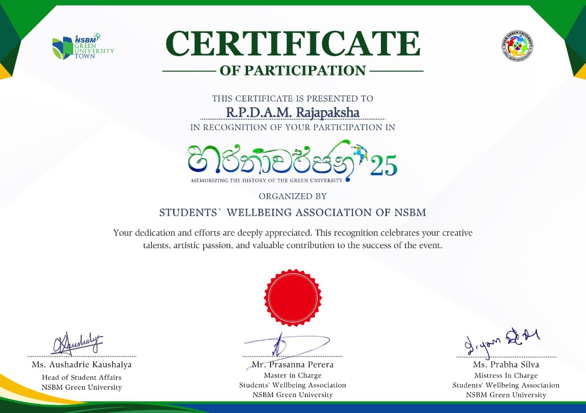
Students' Wellbeing Association of NSBM
2025
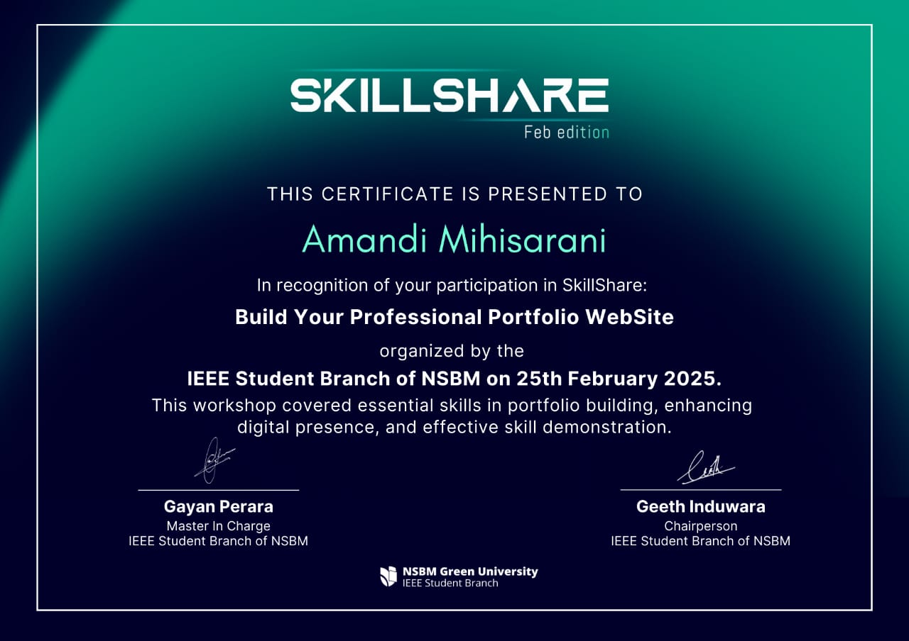
IEEE Student Branch of NSBM
25 February 2025
NSBM Green University — Faculty of Computing
Relevant coursework: Database Management, Business Analytics, Systems Analysis & Design, ERP Systems, Programming, IT Project Management, Development Enterprise Applications.
CA Sri Lanka (ICASL)
Currently reading at Corporate Level — developing advanced knowledge in financial reporting, corporate governance, taxation, audit and assurance, and strategic financial management.
AAT Sri Lanka
Passed Finalist in 2024. Comprehensive accounting qualification covering financial accounting, management accounting, taxation, auditing and business law.
ESOFT Metro Campus
Foundational IT knowledge covering programming, databases, networking and web development.
Samudradevi Balika Vidyalaya
Commerce stream · Business Studies · Accounting · Economics
Vidyakara Balika Vidyalaya
Foundational secondary education.
Get the latest PDF copy of my CV for internship applications.
I'm open to internship opportunities, collaborations and interesting conversations. Feel free to reach out — I'd love to connect!
Testimonials will be added after permission is confirmed.